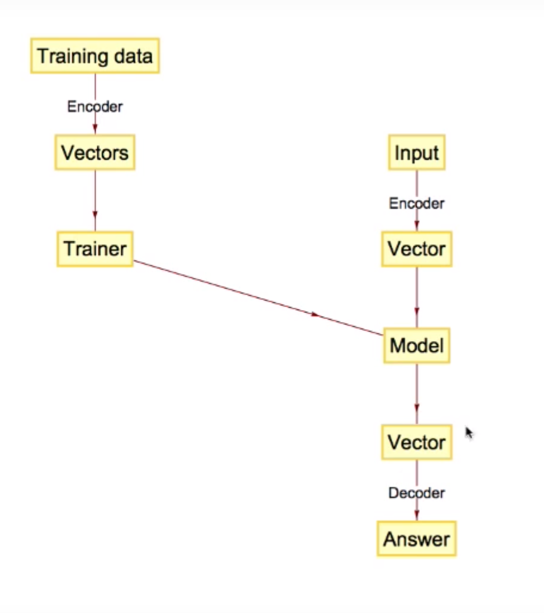

Generelt
Begreber
- Iterative
- Automatic
- Evolutionary
Process
- Minimize error --> Gradient Descent --> Iterate
- Training and testing
- Automating method choice (eks. Vælge bedste classification algorithkm)
- 
Typer af modeller
Supervised
- Classification (class)
- Prediction (specific value)
- Sequence Prediction (next element of a sequence)
Unsupervised
- Clustering
- Reinforcement learning
Data
Results